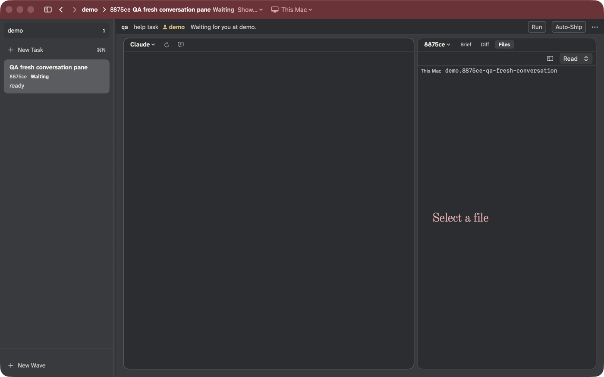
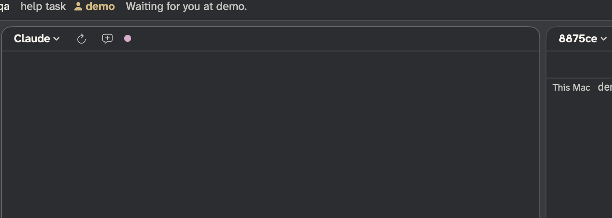
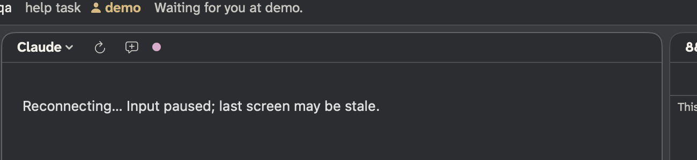
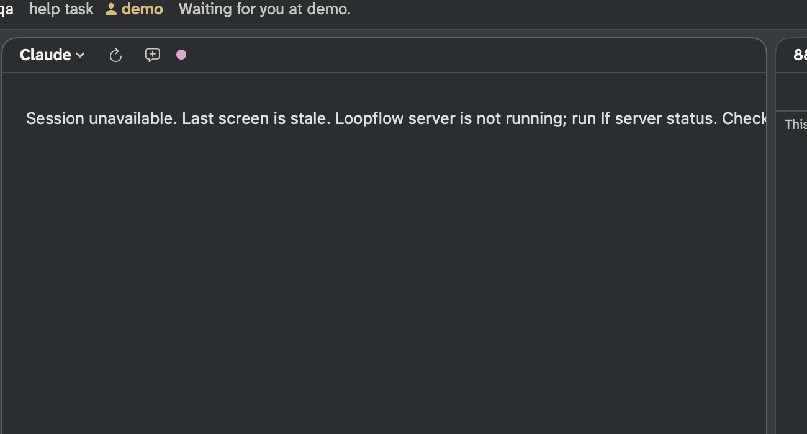
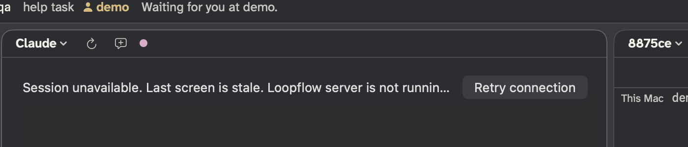
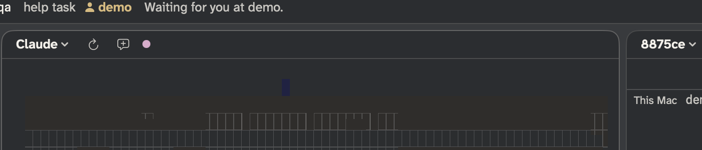
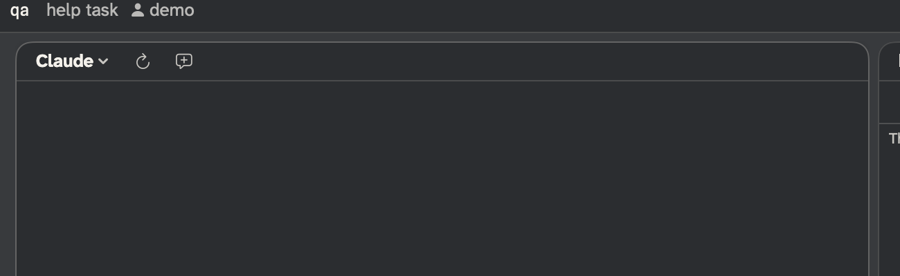

An isolated Dev bundle (com.loopflow.mac.loo1064qa.dev) built from this branch, plus the branch lf, running on a private Machine under /tmp/lf1064 with a stand-in claude. The bundle was launched with open -n -g behind the windows of a person using the Mac. It was driven with the QA hook, lf desktop and screencapture -l.
Ran lf task create 'QA fresh conversation pane' --run, then opened loopflow://demo/task/8875ce. The terminal sits directly under the Claude strip, with no "New conversation" line. Pane attachment usable. desktop capture shows the first turn arriving at the provider.

Killed the provider twice. Each time the pane reopened it with --resume <thread>. Once the stand-in ran the SessionStart hook, the store recorded started and then resumed, and lf session history show printed both as Provider transition: lines. The pane shows no "Resumed in a new process" line. desktop send plus Enter came back as you typed: hello from desktop.

Stopped the private server. The pane first showed "Reconnecting… Input paused; last screen may be stale." and then the relay's own message.

Found: the relay's message ("Session unavailable. Last screen is stale. Loopflow server is not running; run lf server status. Check …") ran past the pane's edge. The AX tree placed Retry connection at x=1674 pt, outside the pane, so nobody could press it.

Fixed: GhosttyTerminalView's connection bar was an NSStackView whose frame is set by hand, so its contents overflowed instead of compressing. It is now a plain view laid out in layoutConnectionBar(): the message truncates and the button stays beside it inside the bar. The new test TerminalPolishTests/longConnectionMessageKeepsRetryVisible covers it. After the rebuild:

With the server restarted and Retry clicked, the bar cleared and the pane read usable again. The hook clicks reported no result and press was refused once the button hid, so this run can't tell whether Retry or the relay's own reconnect brought the pane back.

Opened a new Task's link and took eight snapshots 1.2 s apart. The strip draws, then the terminal sits under it. No frame had a header line. The opening spinner came and went between snapshots.

scripts/test_desktop.sh --filter TerminalPolishTests | 5/5 passed, headless, here |
| Gate filter from plan.md | left to gate/CI |
Works: fresh, resumed and reattached panes open directly under the strip. Transitions stay in lf session history show. Input reaches the provider after a resume. Reconnecting and unavailable bars appear, and Retry is now reachable.
Not reached:
desktop capture instead.Still wrong (outside this change): a stale Ghostty frame from an earlier screen (the real claude's onboarding) stays drawn in a background window after a reconnect.